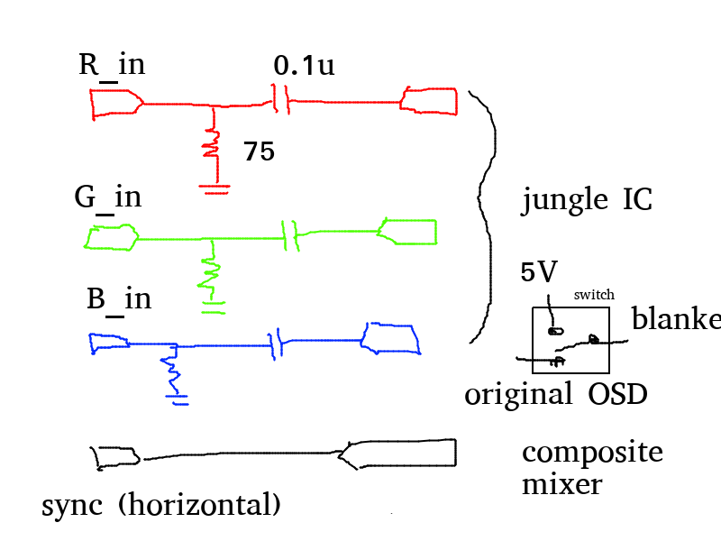
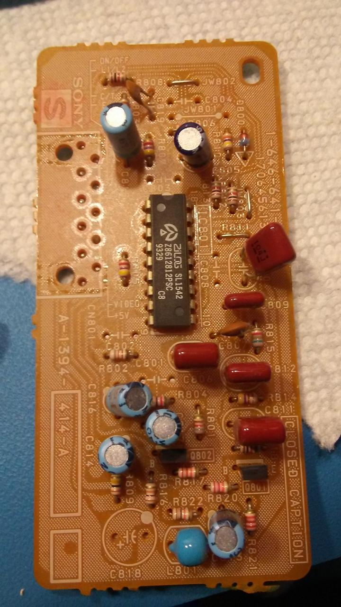
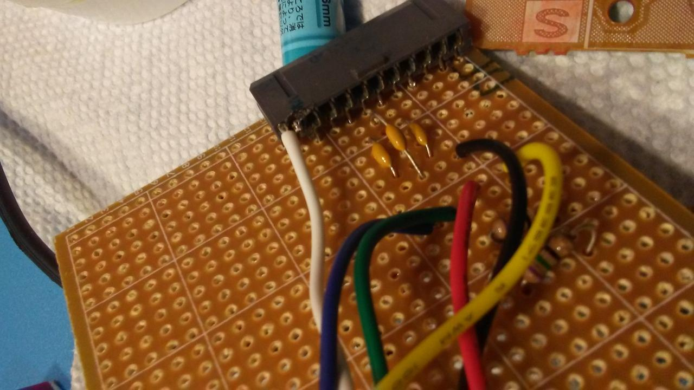
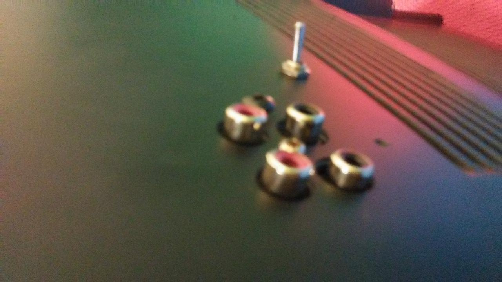

RGB Modding a CRT
September 2020 Many retro game enthusiasts would tell you that a Sony PVM (Professional Video Monitor) is the pinnacle of the game displays that offers visuals of the highest calibre in contrast precision and beauty. Built with probably the most advanced CRT technology ever created, these monitors sell for a boatload, seeing that the CRT (Cathode Ray Tube) business is all but dead since around the year 2010. Not to far before the demise of analog TV in the US.
The few odd parts of the room that have not been cornered by the LCD market are 1) legacy airline industry 2) retrogaming and arcade enthusiasts. Sure enough, CRT has several advantages for how old and outdated it may now appear, with it’s large rear end and loud eletric hum. Probably the most important point is its analog design. Without the need for often slower digital memory for high resolution output, we have a zero-lag TV. It also supports various analog quirks of older computers and video game consoles which targeted analog signals.

While not a Sony PVM, this Commodore 64 Monitor was designed for text display allowing it to display constrast levels much higher than normal CRT TV sets
A have an old Sony CRT monitor from around 1993. Not originally mine but I acquired it through an online marketplace. I discovered that it is possible to modify a consumer TV to give it the abilities to display arcade-quality pictures. You can find many comparisons at retrorgb but conventional composite input pales ( :D ) comparably to RGB input. The retrorgb site also explains what exactly is RGB and how it differs from component. modification is described on this shmup thread and is rather straightforward. Effectively, since I couldn’t source a PVM for cheap, I thought it would a fast and simple project to upgrade a consumer TV into this a superior form.
Theory
The mod depends on the important fact that the CRT already has RGB input – but only for the On Screen Disploy (OSD), which is the overlay text that displays the channel number, volume bar and menu navigation. This can be simply verified if you have a Service Manual – which you may find on elektrotanya. Since the chip that generates this text (usually PLL controller) is discrete and different from the chip that coverts video input into high voltage controls to the guns (Jungle IC), the desired signal can be injected directly where the two circuits connect.
You can’t directly connect the signal of course. A good circuit will need to ipmedance match the input (75Ω) and a cap (0.1μF) to reject DC and accept video signals. A Blanker is the signal that is in charge of controlling the mask, allowing the actual signal to come through. We’ll just tie the blanker signal to switch between 5V (always on) to ground (always off).

You also need to find a sync signal in here because RGB itself does not come with it.
Practice
The difficult part of this project is that each CRT is different. Not all have RGB input to the jungle – some operate only Y/C (luma and chroma channels). On top of this, it is necessary to determine exactly where on the board the components are! A service manual with the schematic is extradinarily useful and here and oviates the need for reverse engineering, which can be annoying considering the high voltage nature of the tube while it is powered on. It is prudent not to explode anything while working with CRTs.
Fortunately, I was able to find a schematic for my board. The basic block digram was 1x4 pages while the main schematic itself was 2x4 pages for just the main board.
Closed Captioning

I found a closed captioning daughterboard which provided an additional RGB input and sync into the input! This solution became evident: strip the connector from the board and design a new daughterboard to inject signals directly!

Once the board was fabricated, I selected some RCA connectors and a screw-mount switch into the back of the TV. Wallah~ beauty.

Did not label the invididual signals. I did use RCA connectors for this project as
- I had theses parts available
- BNC connectors are harder to find and I would need custom cables for everything
- It is fun to guess which signal is which
I did actually adopt a scheme where the red connectors mark Red and gReen while
the black connectors mark Blue and sync.
Cables
To test I used my Sega Genesis (Megadrive for all you non-North Americans) and it looks great! Just need to build actual cables instead of sticking loose wires into the female connector.
It will probably work even better for things like home computers that run on 240p or ones that output at 15kz like the Commodore Amiga.
Links
- RetroRGB speaks to getting the best signal from your game console site
- Long thread with many examples of CRT mod done and various troubleshooting site
- Grab your CRT schematics (if you’re lucky) on Electrotanya